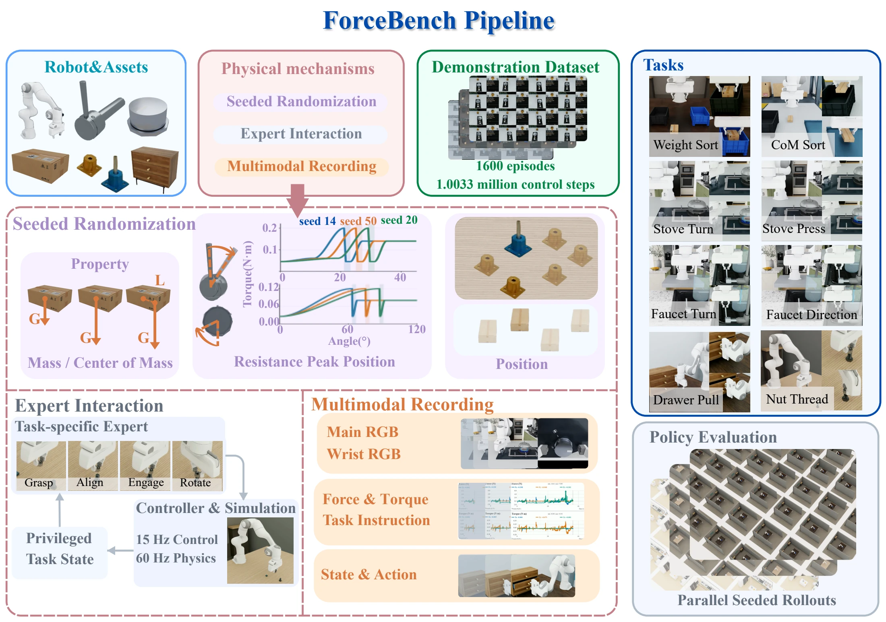
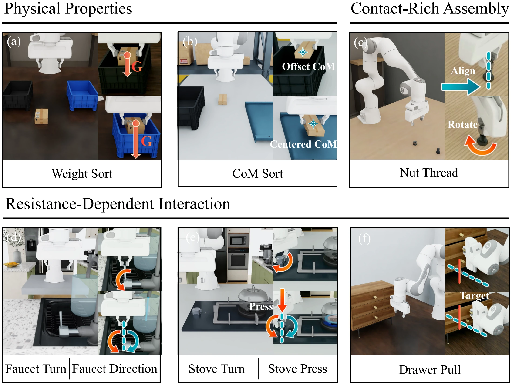
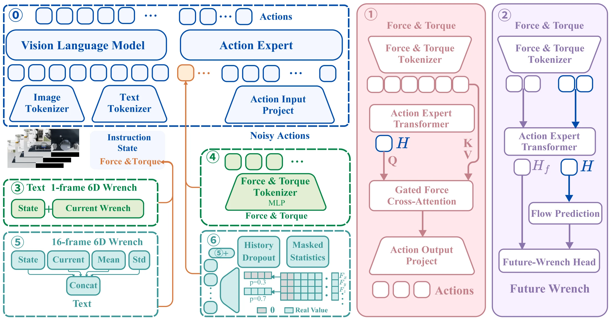
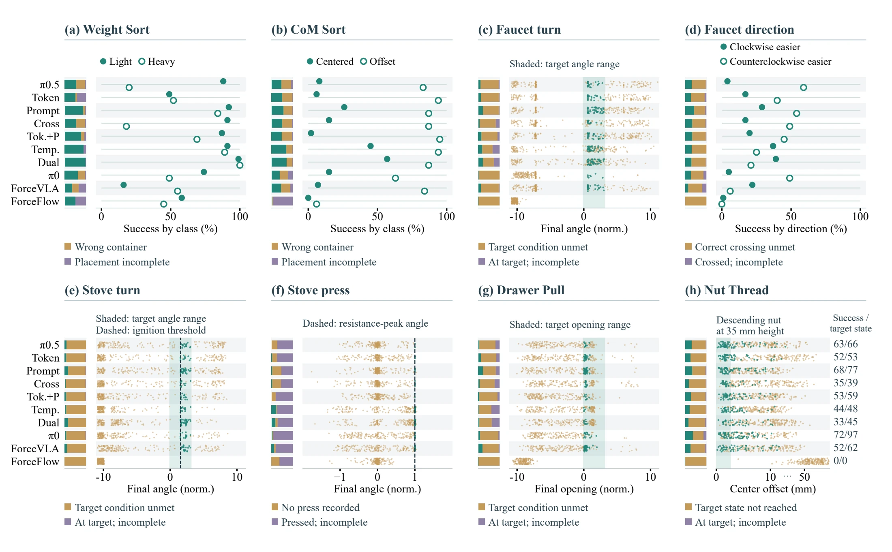
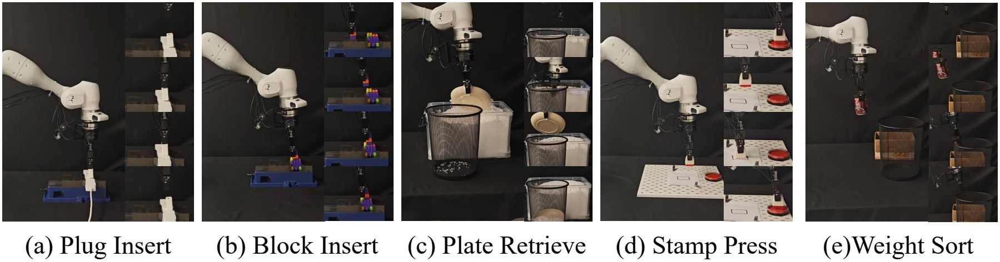
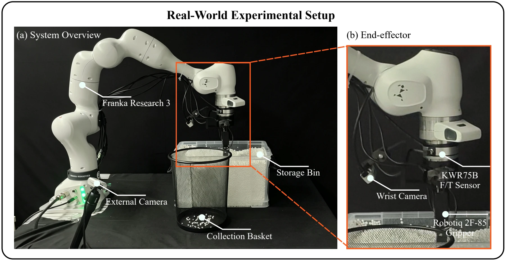

Physical-property inference
Infer mass or center of mass through interaction, then choose the correct destination.
Weight Sort · CoM Sort
Anonymous submission · ICRA 2027
One benchmark · Three manipulation demands
Force feedback can inform both physical decisions and their execution. ForceBench compares how vision-language-action policies integrate wrist force and torque under a shared observation, demonstration, and evaluation protocol.

Force feedback provides vision-language-action (VLA) policies with physical observations that can guide action selection and execution. However, differences in tasks, demonstrations, and control settings across existing systems hinder reliable comparisons of force integration designs. We introduce ForceBench, a simulation benchmark for evaluating six-axis wrist-force integration under a unified protocol. ForceBench combines eight tasks spanning physical-property inference, resistance-dependent interaction, and contact-rich assembly with 1,600 synchronized demonstrations and task-specific success criteria. We compare a no-force baseline and six force integration designs on a shared π₀.₅ backbone. Prompt Fusion achieves the highest observed mean simulation success of 35.31%, compared with 23.25% for the baseline, and improves success across all three task categories. Predictive and temporal gains in simulation concentrate on physical-property inference, while both temporal designs underperform the baseline on assembly. Real-world evaluation of eight systems across five tasks supports the main qualitative trends: Prompt Fusion and Dual-Path Fusion achieve 63.00% mean success, compared with 40.00% for the baseline, but only Prompt Fusion improves every task. These findings support ForceBench’s practical value for identifying the benefits and limitations of force integration across manipulation demands.
The task suite
Infer mass or center of mass through interaction, then choose the correct destination.
Weight Sort · CoM Sort
Adapt direction, engagement, or stopping to the resistance encountered during motion.
Faucet Turn · Faucet Direction · Stove Turn · Stove Press · Drawer Pull
Align a nut with a bolt, engage the threads, and rotate to a target threaded height.
Nut Thread

A shared π₀.₅ backbone
A no-force baseline and six force integration configurations share the backbone and simulation protocol. Each design is evaluated separately.

Token Fusion + Pred retains the Token Fusion input and adds a ten-step future-force prediction loss during training.
The auxiliary head is unused at deployment; it does not supply predicted forces to the controller.
Temporal Prompt adds the current sample and per-axis mean and standard deviation from a 16-sample window to the prompt.
Dual-Path Fusion adds four action-side tokens from masked temporal statistics alongside that prompt pathway.
The designs vary representation, normalization, model capacity, and integration location together. Their comparison does not isolate temporal history as a single controlled factor.
Results from the submitted manuscript
Simulation · 8 tasks
vs. 23.25% for π₀.₅ without force
+12.06 percentage points
Highest observed mean in the reported simulation table. Dual-Path Fusion is close at 35.13%.
Real world · 5 tasks
vs. 40.00% for π₀.₅ without force
+23.00 percentage points
The two designs tie on mean success. Only Prompt Fusion improves every task over the baseline.
Force observations alone do not guarantee an improvement. Representation and the interface to the policy affect the outcome.
Both temporal designs help physical-property inference in simulation but underperform the no-force baseline on Nut Thread.
Reaching the right physical state can still fall short of success when release, withdrawal, or stability conditions are unmet.
Simulation: 200 episodes per task–system pair. Real world: 20 trials per task–system pair. Means weight tasks equally. These are observed success rates; small differences are not claims of statistical significance.
View both complete results tables
Beyond simulation
A separate real-world study uses 200 demonstrations per task and 20 evaluation trials per task–system pair. It supports the main qualitative trends while testing different physical demands.


A Franka Research 3 arm carries a KWR75B six-axis force/torque sensor and a Robotiq gripper. External and wrist cameras provide visual observations.
Real-world policies are trained for 10,000 steps with batch size 64 and evaluated on the same 20 initial conditions for each task.
This is a separately trained real-world evaluation, not a claim of direct simulation-to-real transfer.
A common simulation protocol
200 successful demonstrations per task. Training-instance seeds 0–199; evaluation-instance seeds 300–499. Privileged expert state is excluded from policy observations.
Two 224 × 224 RGB views, language, a seven-dimensional robot state, and a six-axis wrist wrench for force-enabled configurations.
60 Hz physics; 15 Hz control and recording. Episodes allow up to 1,500 control steps, corresponding to 100 seconds of simulated time.
The π₀.₅ configurations, π₀, and ForceVLA predict and execute 50 steps per query, unless an episode ends earlier. ForceFlow predicts 64 and executes 32.
Policies are trained separately for each task. π₀, ForceVLA, and ForceFlow are additional reference models, with differences in backbone, training, or action horizon described in the protocol.
Read the full training and evaluation protocolResources
Paper: Submitted to ICRA 2027. A public paper download is not currently provided here.
Code, demonstrations, and checkpoints: Public download links are not currently available. This page will be updated when releases are available.
Citation
Submission-stage reference; this is not an accepted conference publication.
Author information and the citation entry are withheld during anonymous review.